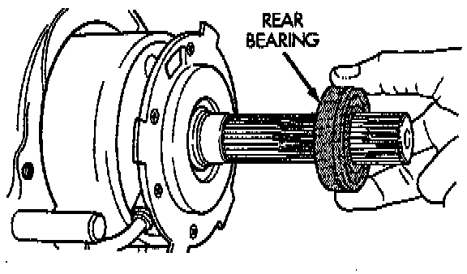
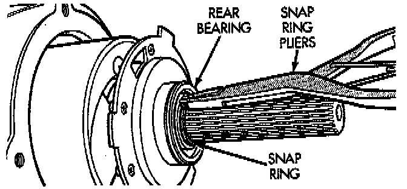
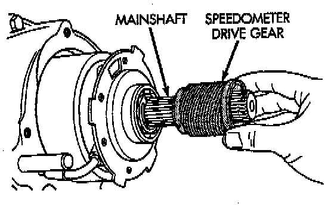
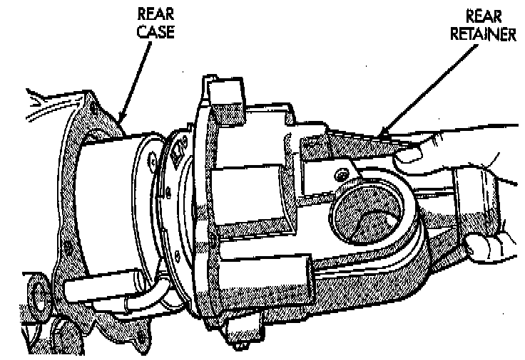
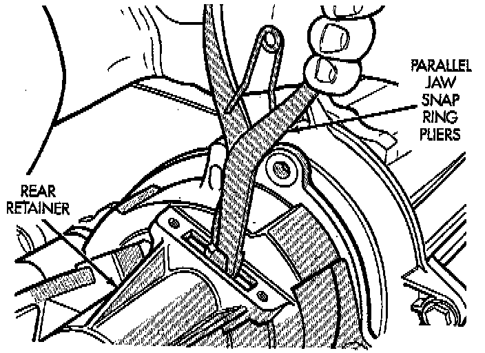
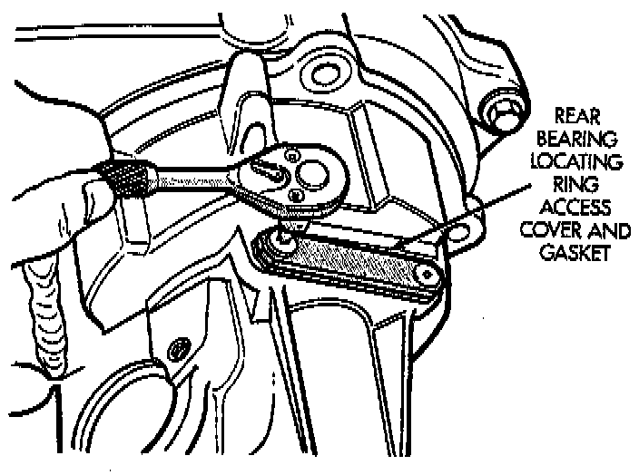

Rear Retainer and Oil Pump Installation
1. Install new O-ring on flanged end of oil pickup tube.
2. Install oil pump.

3. Insert oil pickup tube in pump.
4. Install rear bearing on mainshaft. Locating ring groove in bearing goes toward end of mainshaft.

5. Install rear bearing retaining snap-ring.

6. Install speedometer drive gear.
7. Install rear bearing locating ring in rear retainer, if ring was removed during overhaul.
8. Apply 3 mm (1/8 inch) wide bead of MOPAR gasket maker or silicone adhesive sealer to mounting surface of rear retainer. Allow sealer to set-up slightly before proceeding.

9. Slide rear retainer onto mainshaft.

10. Spread rear bearing locating ring and slide rear retainer into place on rear case.
11. Install and tighten rear retainer bolts to 27 - 34 Nm (20 - 25 ft. lbs.).

12. Install locating ring access cover and gasket. Tighten plate attaching screws to 10 Nm (85 inch lbs.) torque.